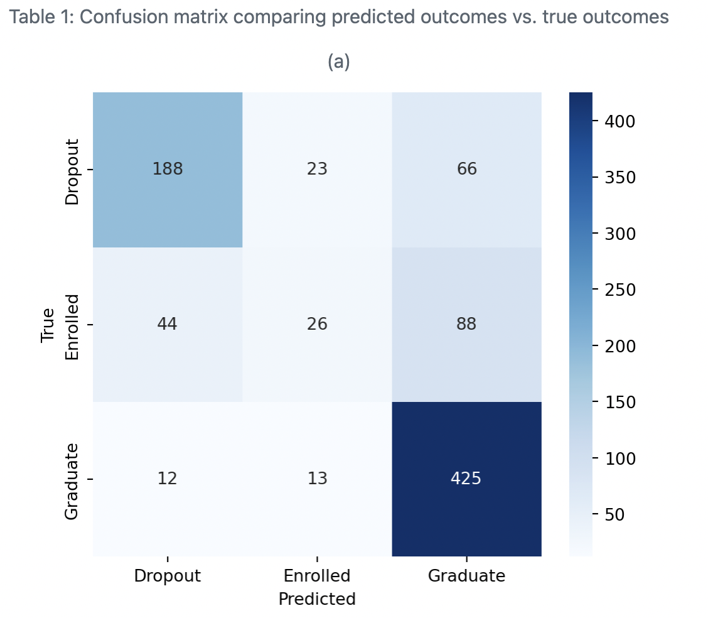

Introduction
Did you know that student dropout rates remain a persistent challenge in higher education worldwide? Each dropout represents not just an academic setback but also a strain on institutional resources and a missed opportunity for personal and professional growth. The question is, can we do better? What if we could use technology to identify at-risk students early and provide them with the support they need to succeed?
Machine learning offers a promising solution. By analyzing patterns in academic and demographic data, machine learning models can predict whether students are likely to drop out, stay enrolled, or graduate. In this blog, we’ll explore how machine learning—specifically the k-Nearest Neighbors (k-NN) algorithm—can be applied to address this challenge. Using a dataset from UC Irvine’s Machine Learning Repository, we built a model that achieved moderate success in identifying at-risk students. Let’s dive into how it works and what we learned.
The Challenge: Understanding Academic Dropouts
Dropping out of college is not just a personal setback for students; it’s a systemic issue with far-reaching consequences. Students who drop out may face limited career opportunities and financial strain, while institutions lose tuition revenue and bear the costs of addressing retention problems.
Identifying at-risk students is a complex challenge. Many factors contribute to academic success or failure, including personal, academic, and socio-economic variables. While schools collect a wealth of data, the challenge lies in making sense of it. This is where machine learning steps in: it’s capable of uncovering patterns and relationships that might otherwise go unnoticed.
The Dataset and Its Role
To tackle this problem, we used a publicly available dataset from UC Irvine’s Machine Learning Repository, which is created by Mónica Vieira Martins, Jorge Machado, Luís Baptista and Valentim Realinho at the Instituto Politécnico de Portalegre Realinho et al. (2022). This dataset includes demographic, enrollment, and academic information about undergraduate students. Key features include:
Demographics: Age, residence type, parental education levels.
Academic Records: GPA, number of courses completed, and absences.
To ensure fairness, we excluded sensitive features like gender and nationality, which could introduce bias into our model. Additionally, all numeric features were standardized to ensure consistent model performance.
Think of the dataset as a detailed report card combined with background information, offering a holistic view of each student. This richness enabled our model to make informed predictions about their academic trajectory.
The Process: How Machine Learning Works
The Python programming language Python (2021) and the following Python packages were used to perform the analysis: Pandas McKinney et al. (2011), Scikit-learn Kramer and Kramer (2016), Pandera Bantilan (2020) and Altair VanderPlas et al. (2018). To predict student outcomes, we used the k-Nearest Neighbors (k-NN) algorithm for this project to build a classification model. Here’s how it works, in simple terms:
Imagine a student’s academic record as a dot on a graph. k-NN looks at the student’s “neighbors”—other dots closest to them—to predict their outcome. For example, if most of a student’s closest neighbors dropped out, the model predicts that they are likely to drop out too.
Here’s how we approached the problem:
Data Preprocessing: We standardized all numeric features, excluded biased or irrelevant ones like gender and nationality, and ensured fairness in the dataset. Data was split with 80% being partitioned into the training set and 20% being partitioned into the test set.
Training the Model: Using k-NN, we tested different values of “k” (the number of neighbors considered) to determine the most accurate configuration.
Hyperparameter Tuning: To enhance accuracy, we used RandomizedSearchCV to fine-tune the hyperparameters. The hyperparameter K was chosen using 5-fold cross validation. The optimal value for k was determined to be 17.
After fine-tuning, our final model achieved a consistent accuracy score of 72% on both training and test data. This means the model was fairly reliable in predicting outcomes across different datasets.
Key Insights
From table 1, the analysis highlighted that the model could accurately predict 68% of student dropouts—a promising baseline for intervention strategies.

With an overall accuracy of 72%, the model offers actionable insights for identifying at-risk students. However, the exclusion of socio-economic data, such as unemployment rates and GDP, limited the scope of predictions. For example, let’s consider two students with similar academic records but different socio-economic backgrounds. Including socio-economic data could reveal why one student thrives while the other struggles, offering more targeted solutions.
Opportunities for Improvement
Our model offers promising results, but there are key ways to enhance its effectiveness:
Tailored Models for Individual Schools: While our dataset was generalized, focusing data collection on individual institutions could yield more precise predictions. Each school has unique academic environments, support systems, and challenges. By training models specific to each school, institutions could achieve more actionable and relevant insights for their student populations.
Expanding the Dataset: Including data from diverse institutions and regions would increase the model’s generalizability, allowing it to cater to broader educational contexts.
Integrating Socio-Economic Factors: Adding variables like family income, parental employment, or local economic indicators could offer deeper insights into factors influencing student outcomes. These data points can highlight external challenges and provide schools with direction for targeted interventions.
Ethical and Practical Implementation: Ensuring fairness and preventing biases in predictions is crucial. Predictions should guide proactive support strategies and not stigmatize students. Furthermore, transparency about how data is collected and used will build trust among stakeholders.
Iterative Feedback Systems: Schools could continuously refine their models by incorporating new data and learning from intervention outcomes, creating a dynamic and adaptive system for student support.
By adopting these improvements, we can move closer to creating personalized, fair, and impactful solutions for tackling student dropout rates.
Why This Matters: The Bigger Picture
This project highlights the transformative potential of machine learning in education. By identifying at-risk students early, schools can allocate resources more effectively—whether it’s academic counseling, financial aid, or mentorship programs.
Imagine a future where every school has a data-driven system to support students proactively. By combining academic and socio-economic data, institutions can develop robust tools to reduce dropout rates and empower students to achieve their goals. This is not just about technology; it’s about creating a more equitable and supportive education system.
Conclusion
Predicting academic success using machine learning is more than a technical exercise; it’s a step toward improving lives and strengthening communities. While our model is a work in progress, it offers a glimpse into what’s possible when data meets compassion.
What do you think? Could this approach work in your community? Let us know in the comments, and stay tuned for more updates as we refine our model and expand our dataset.